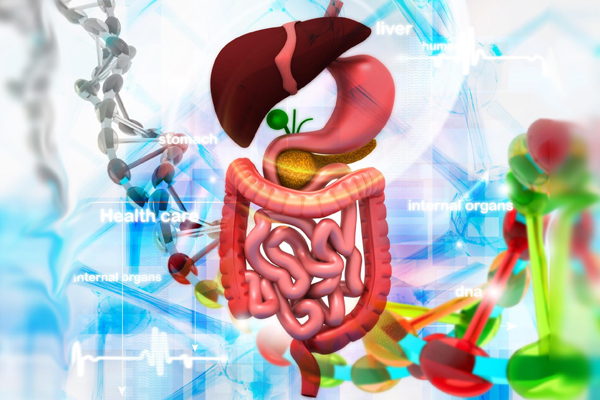

Dutch · Vereniging Homeopathie
Homeopathie voor kinderen: zacht, holistisch en op maat
Hoe homeopathie kinderen en hun ouders kan begeleiden, met oog voor het hele kind.
Read article ↗Words I have written for the Vereniging Homeopathie (in Dutch).
Hoe homeopathie kinderen en hun ouders kan begeleiden, met oog voor het hele kind.
Read article ↗Over de bijzondere periode van zwangerschap, bevalling en kraamtijd en de begeleiding daarin.
Read article ↗
Een holistische kijk op de spijsvertering en het lichaam in balans.
Read article ↗Articles are general information and not medical advice.